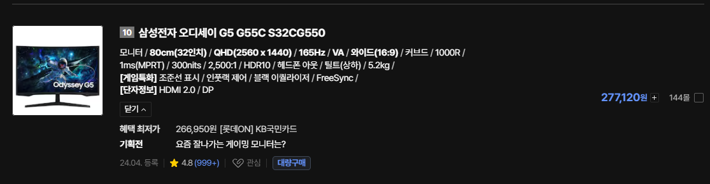

32인치대 게이밍 모니터가 20만원 후반대까지 떨어짐

32인치대 게이밍 모니터가 20만원 후반대까지 떨어짐
에일리언 모니터 그 당시 최고 주사율240 60만 짜리 10년전에 산거 아직도 잘굴러가서 그냥 쓰는중..
va패널이네
80급 아니면 아직은 풀치디가 게임하기엔 좋더라
요즘은 oled가 대세라 아무래도 다른 패널들은 경쟁력이 많이 떨어지는 듯 함
QHD 는 순수 게임용인데. 그걸 돌릴수 있는 컴퓨터가 너무 비싸져서 모니터도 같이 안팔림
아.. 너무 슬픈 현실이다..
급맞출 글카가 넘 비싸잉
24 qhd oled 나올때까지 존버
va 패널이니까...
중국애들이 하도 저가로 치고 나와서 내려야 됨
사고싶다
VA잖어…..
LCD가격 곧 오르니따 더블모니터구성할거면 사둬라 섹스
va네 ㅅㅂ va는 게이밍으로 절대 사지마라
32인치가 마지노선이다 더크면 좋을껏도 없다
45인치쓰는데 개좋은데요
38인치 21:9 좋음
45gx 900a였나
쿠팡 대란떳을때 지각비주고 58에샀는데 만족
가끔 거슬리는 픽셀이있긴한데 그래도 45인치 oled가어디야
VA는 버려야지...
배그 하는데 운전할 때 차 뒤로 잔상 생기는 거 보고 ??? 했던...
지금은 IPS 모니터 써서 그런 거 전혀 없지만
알리에서 85달러에산 27인치 qhd 180hz ips모니터 서브로 잘쓰는중
솔직히 메인으로 쓰는 LG꺼랑 크게 차이 못느끼겠음
스펙을 보면 저 가격인 이유가 잇지
난 27 그 위로가면 너무커서 별로더라
32인치 너무큼
커브드인데 얘들 죄다 va라 싸단것만 언급하네.
개인적으로 VA에 게이밍 네이밍 붙이는 새끼들은 다 사기꾼이라고 생각함. 모니터 모를때 게이밍이라고 붙은 QHD 144 VA패널 샀는데 사기나 다를바가 없더만
VA가 Nega 액정 써서 느린 건 맞는데 삼성은 지금도 그런지는 모르겠지만 백라이트 조절해서 실효 RT 높이는 방법을 씀. 그래서 좀 보상되기는 하는데 문제는 백라이트 깜박이면 휘도가 떨어짐. 그래서 스펙상의 휘도랑 고속 구동 시 휘도가 안맞을 수는 있음. 요샌 또 다른 기술 쓸 수도 있긴함. 그럼에도 VA 쓰는 이유는 커브드에 유리함. LCD로 R값 높은 모델은 VA가 유일한 대안임
마찬가지로 IPS도 nega 액정 쓰는 모델 있는데 보통 게이밍에는 잘 안쓰고 고 CR 모델에 씀.
추가로... G5는 옛날모델이라 좀 구릴거고 G7이나 G9은 OD 잘잡아서 VA라도 제법 괜찮다고 들음. 사용자들 후기가 나쁘지는 않더라
커브드는 내구도가 씨발이라 이사같은거 좀 자주하는 사람들은 비추한다.
그리고 G5를 게이밍용으로 쳐 사는것도 병신임
대기업에서 싸게 나온 제품은 거르는게 맞음. 대기업제품답게 돈 많이 주고 좋은거 사자.
글카랑 램은 언제 내려주니 ㅠ
쿠팡에서 보험포함 무결 10중반으로사고 글카 드라이버로 qhd 돌리는디?
LG 4k oled 42인치 165hz 모니터도 특가 때 80이면 삼
아니 시바 포케이 사면 뭐해 감당할 글카가 열배는 더 들어 시바 ㅋㅋㅋ
oled가 100hz 정도 더 높은효과줌 반응속도가 10배차이라 fps같은거 하면 좀 느낌
난 oled240으로 바꿈 ㅋㅋㅋㅋ
모니터갤가보면 oled 500hz로 바꾸고 롤첼린지 벽뚫옸다는글도있음 ㅋㅋㅋㅋ
흠 모니터 사야하는데 바꿀때가 왔나
삼숭 커브드 va 고질병만 빼면 좋아
지싱크 지원함?
32인치 눈피곤해서 오래 게임을 못함